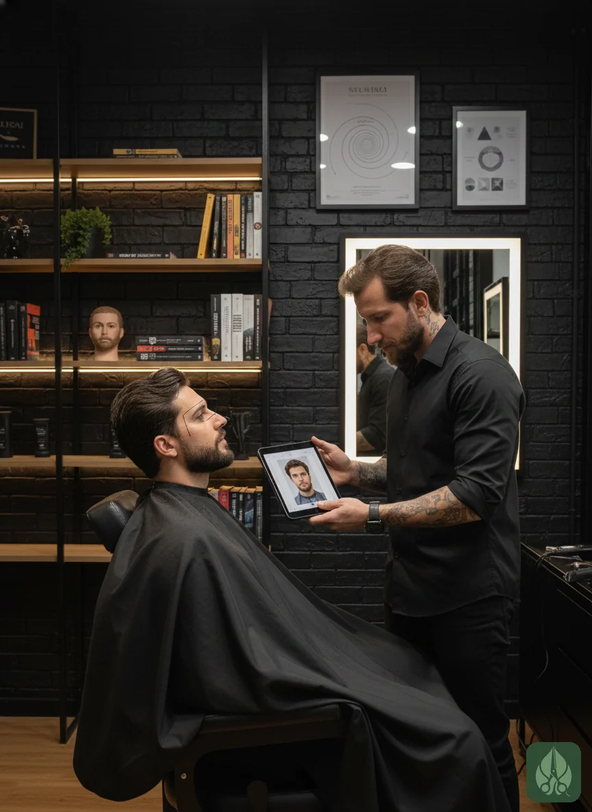
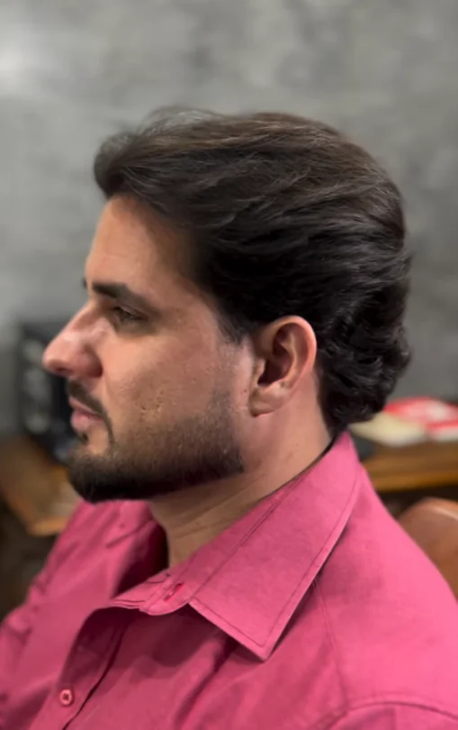
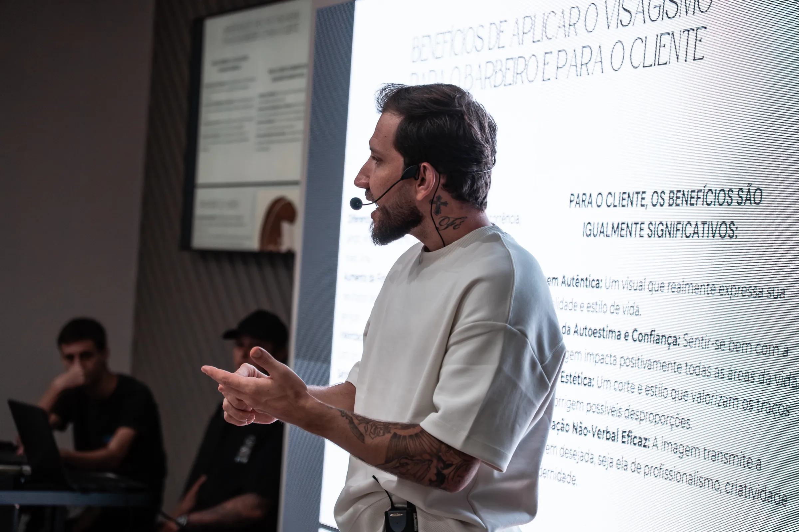

Visagismo
Ribeirão Preto
Imagem sob Medida
Projetos de imagem,
não apenas cortes
O que é visagismo
Não é apenas um corte
É a arte de estudar o rosto e a imagem para criar um visual que valoriza seus traços e comunica quem você é.
Há mais de 10 anos transformando a imagem de homens em Ribeirão Preto, Alex construiu uma carreira baseada em técnica, observação e escuta. O trabalho vai além do corte: é um projeto de imagem que revela a melhor versão de cada cliente.


O método
Do diagnóstico à autonomia
- 01Análise facial
Mapeio seu rosto, traços e proporções para entender o que valoriza e o que deve ser equilibrado.
- 02Arquétipos de estilo
Identificamos os arquétipos que traduzem sua personalidade e a mensagem que você deseja comunicar.
- 03Projeto personalizado
Desenho um projeto de imagem sob medida: corte, barba, estilo e linguagem visual coerentes.
- 04Direcionamento prático
Você sai com produtos, pentes e equipamentos certos para reproduzir o visual em casa.
Serviços
Do rosto ao estilo
Cada serviço é uma consultoria completa, do diagnóstico à reprodução do visual no seu dia a dia.
-
I
Visagismo & análise de imagem pessoal
Estudo do seu rosto, traços e proporções para revelar o corte, a barba e o estilo que potencializam sua expressão autêntica.
Análise facial completa · Diagnóstico de proporções · Projeto de imagem personalizado
-
II
Consultoria de estilo e visual
Definição da sua linguagem visual, do vestuário aos acessórios, alinhada ao seu estilo de vida, profissão e personalidade.
Identificação de arquétipos · Curadoria de peças · Diretrizes de combinação
-
III
Cabelo & barba: reprodução em casa
Orientação prática de como pentear e de quais produtos, pentes e equipamentos usar para você reproduzir o projeto no dia a dia.
Roteiro de finalização · Seleção de produtos · Guia de ferramentas
Teste de arquétipo
Descubra seu arquétipo
10 perguntas rápidas. Sem cadastro. Ao final, você conhece seu arquétipo predominante e recebe um direcionamento para sua consultoria.
Quem ensina o que pratica

Alex leva o visagismo a barbeiros de todo o país.
Como formador, ensina a leitura do rosto, a leitura da personalidade e a construção de um visual autêntico. Essa vivência em sala de aula alimenta o atendimento: cada consultoria carrega a autoridade de quem ensina o que pratica.
Quem já passou pela consultoria
Depoimentos
“O Alex enxergou detalhes que nenhum barbeiro nunca percebeu. Saí com um visual que combina de verdade comigo — mudou a forma como me apresento.”
Rafael M. · Empresário
“Profissional absurdo. A consultoria vai muito além do corte: é um projeto de imagem. Recomendo a qualquer homem que queira se levar a sério.”
Thiago C. · Advogado
“Como formador, o Alex domina a técnica como ninguém. Entendi meu arquétipo e finalmente sei como reproduzir o visual em casa.”
Diego R. · Médico
Antes de agendar
O que é visagismo?
Visagismo é a arte de estudar o rosto e a imagem para criar um visual que valoriza seus traços e comunica quem você é. Não é apenas um corte: é um projeto de imagem pessoal.
Preciso agendar com antecedência?
Sim. O atendimento é personalizado e exclusivo, por isso funciona apenas com horário marcado, pelo Booksy ou pelo WhatsApp.
Onde você atende?
Em Ribeirão Preto, SP. O local do atendimento é confirmado no momento do agendamento.
A consultoria serve para qualquer homem?
Sim. O método é adaptado à sua personalidade, profissão e estilo de vida, do mais clássico ao mais criativo.
Você também ensina visagismo?
Sim. Sou formador e ministro aulas de visagismo para barbeiros, levando a técnica para profissionais de todo o país.
A imagem certa não imita tendências. Ela traduz quem você é.
Agende sua consultoria
(16) 99210-9766
Atendimento com horário marcado · Ribeirão Preto, SP
Local confirmado no agendamento